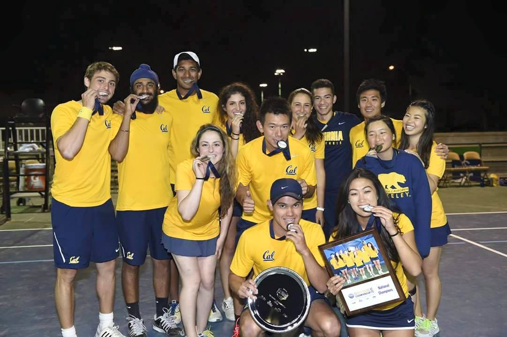
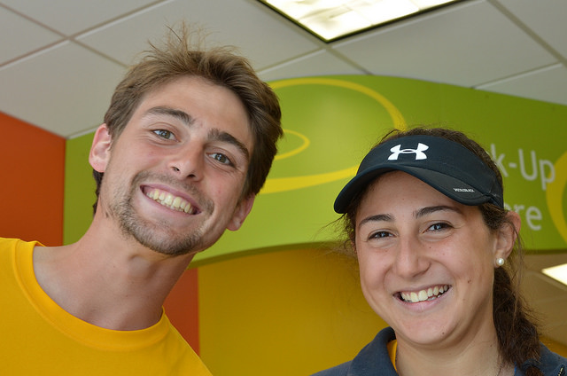

California Club Tennis is a student-run organization that practices and competes throughout the school year. The club is a part of UC Berkeley's Rec Sports Clubs, playing in USTA Tennis On Campus Tournaments. We use World Team Tennis rules in match play, which emphasizes both singles and doubles play. During the fall, we compete against Northern California teams at schools such as Stanford, UC Davis and Sac State. In the spring the team travels to invitational tournaments playing against the best teams across the nation.
Hi guys! This is Riccardo Lemos and Sarah Dessouki, your Cal Club Tennis captains for the 2015-2016 season. We have been on the team since our freshman year and consider the team to be our closest bond with the university. We can't wait to meet all of the great players trying out this fall and we're excited for the year we have ahead of us! GO BEARS!
